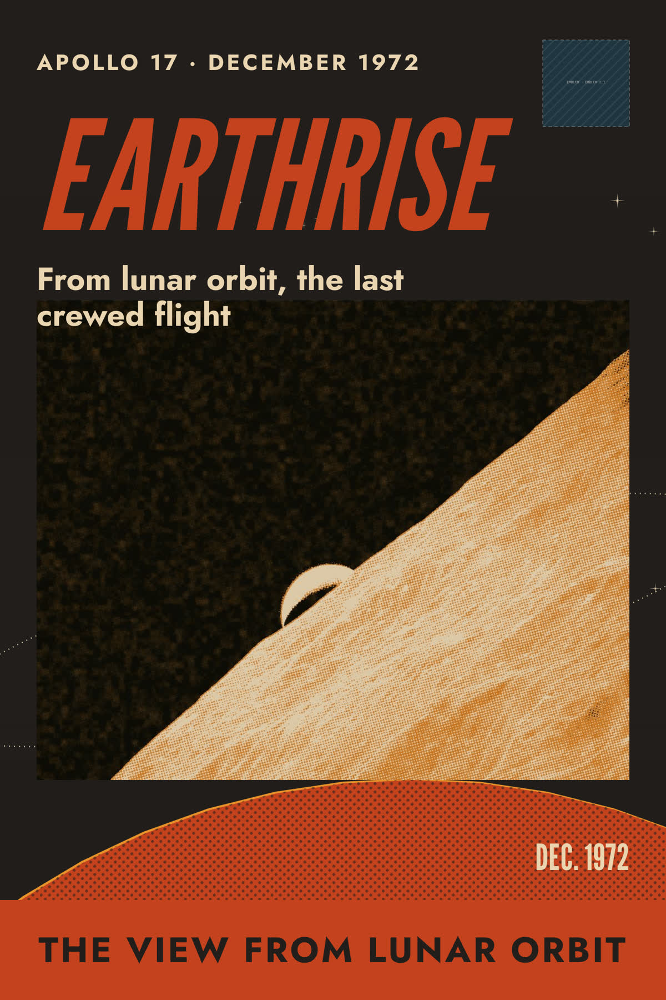
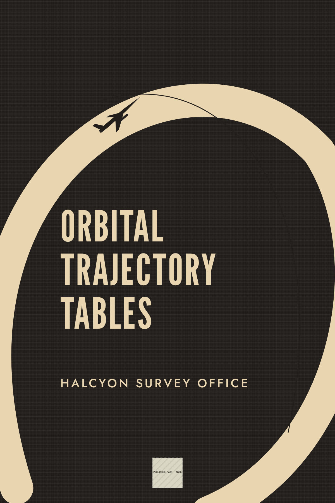
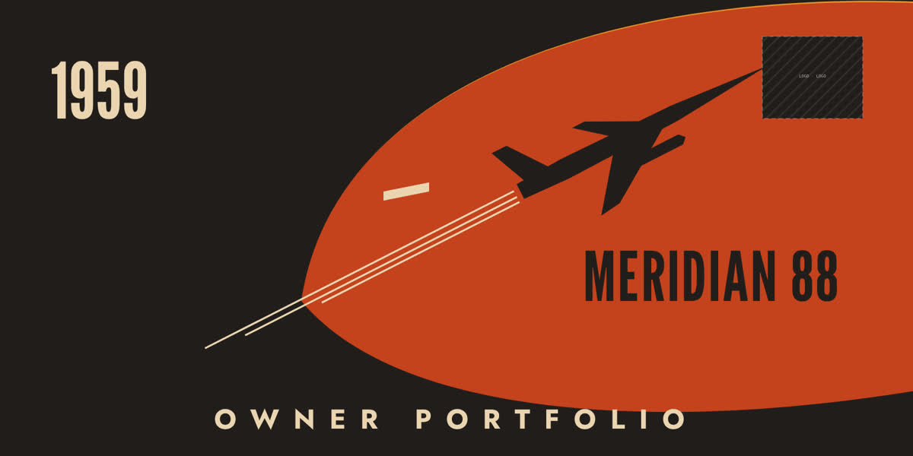
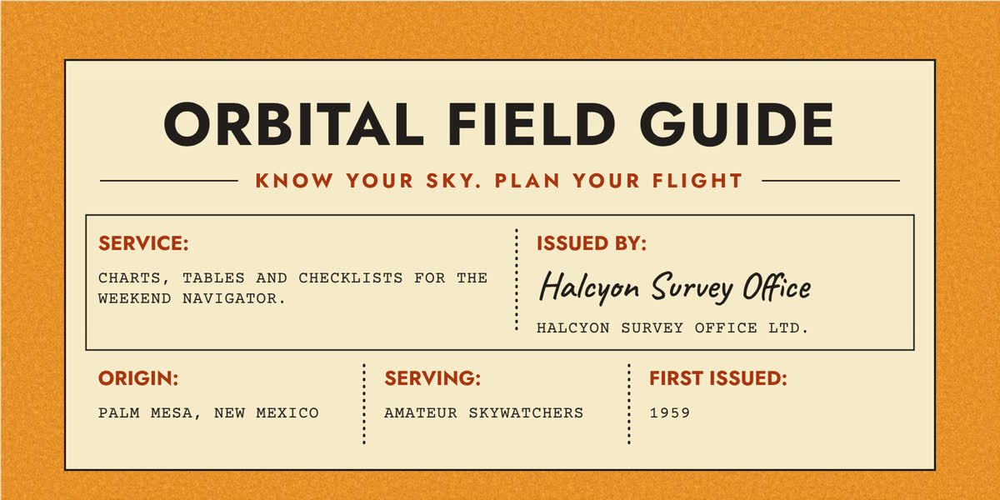
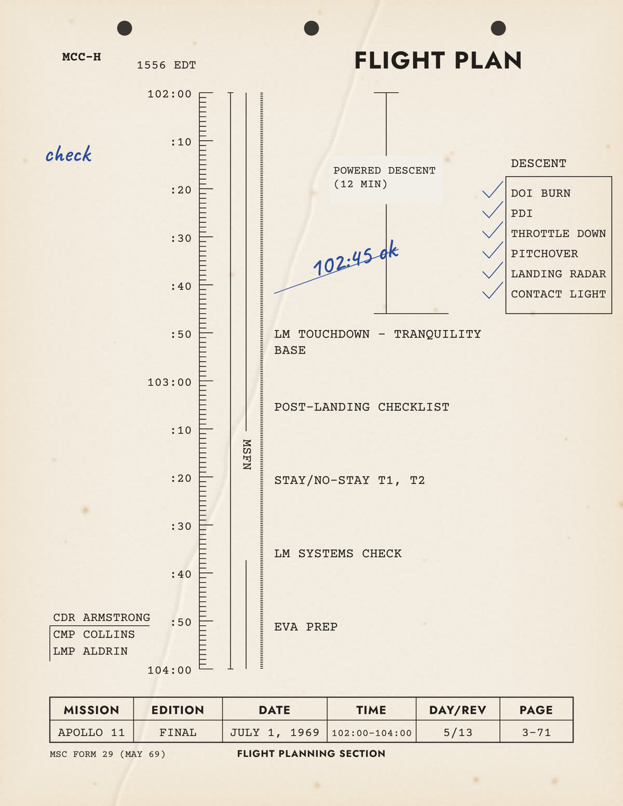
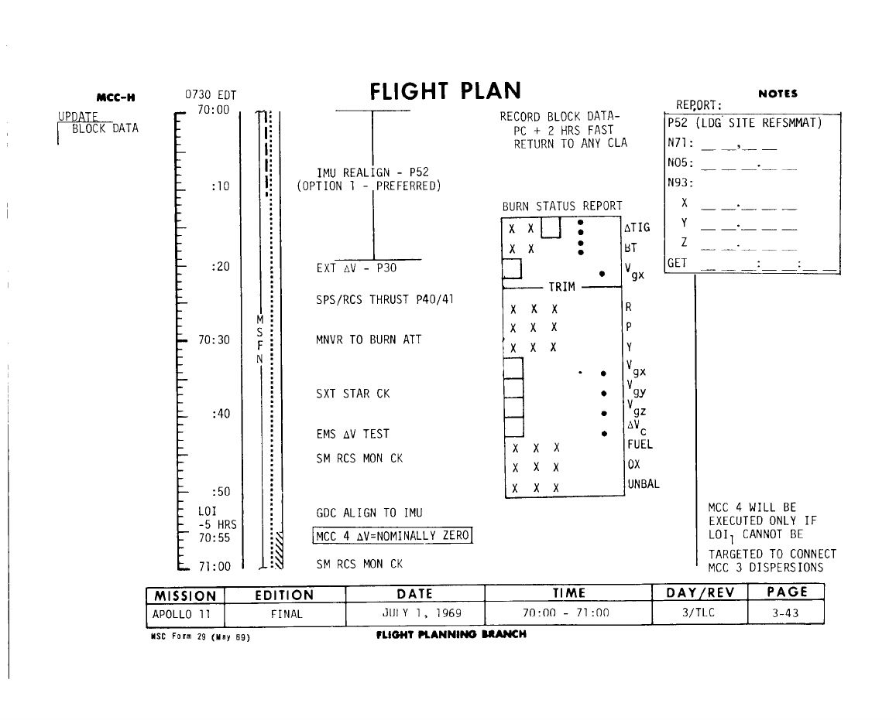
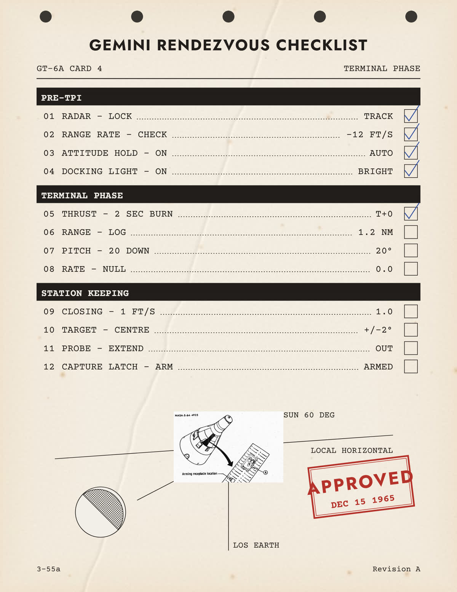
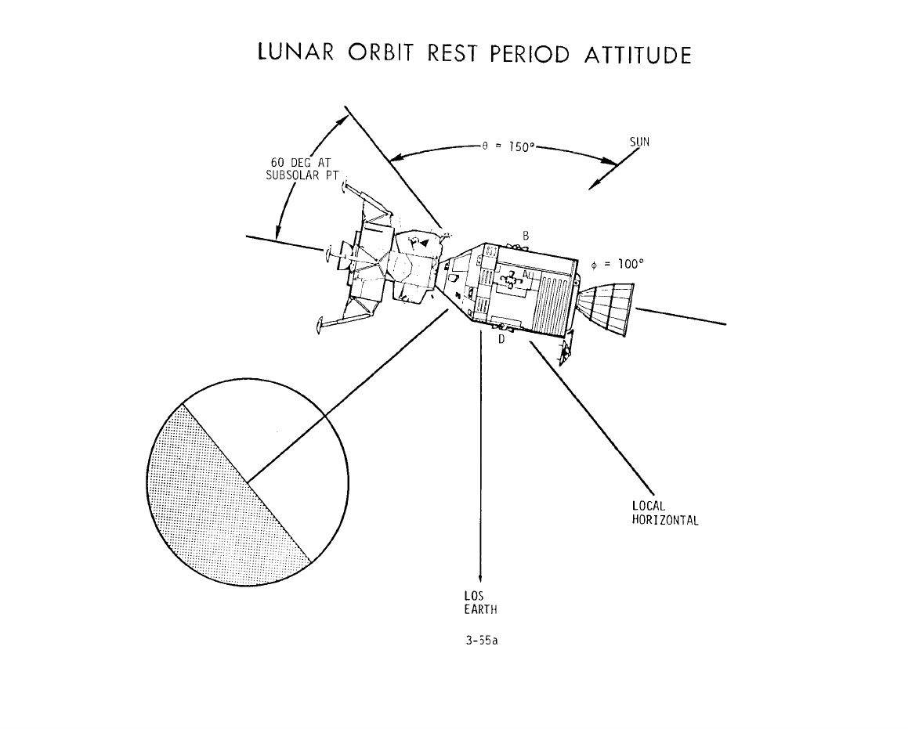
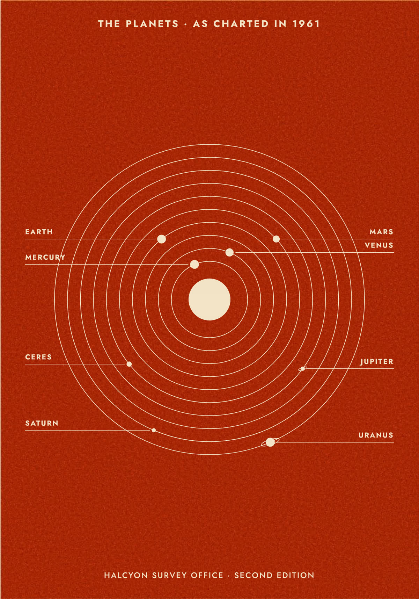
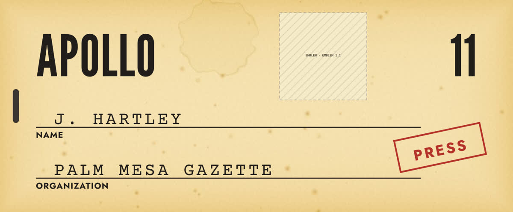

Ten templates · one palette atomic-age · Halcyon Orbital Lines
cover.atomic-magazineMasthead in two inks, contents column, sun disc and orbit; art: NASA Ames torus colony (Rick Guidice, 1975), duotone with a misregistered teal plate.

poster.atomic-travelSlanted condensed title, vermilion band; art: Apollo 17 Earthrise (AS17-152-23272, 1972), duotone. Emblem slot left empty.

cover.atomic-linen-bookCharcoal cloth, a loop round the title with the rocket glyph cut out of it.

banner.atomic-ad-panelVermilion lens with a misregistered mustard plate, swept rocket glyph, tracked wordmark. Brand and logo are user-filled.

card.atomic-field-labelOn a printed mustard board (materials generate --generator print).


doc.atomic-flight-planLeft: the template, set as the Apollo 11 landing hours (historical fact as text, unsigned notes). Right: Apollo 11 Final Flight Plan, July 1, 1969, page 141, for comparison.


doc.atomic-checklistLeft: the template with a NASA Gemini line diagram (S64-04925, 1964), photocopied. Right: Apollo 11 Final Flight Plan, page 160.

poster.atomic-solar-printPrinted vermilion flat with a misregistered mustard plate.poster.atomic-orbit-plateWhite lines on black, chalk labels, a typed formula.

card.atomic-credentialProgramme name as text on aged card; the emblem slot stays empty for the owner's file.